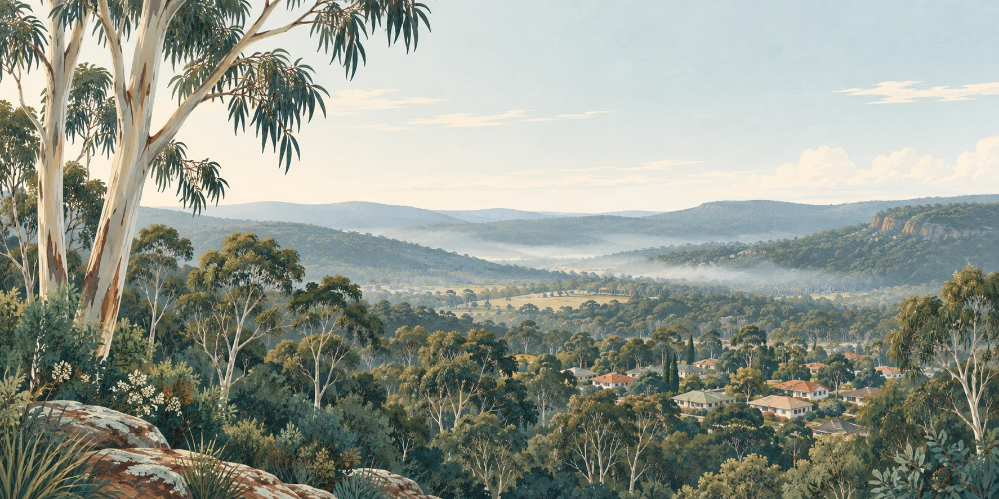

Count protection and exposure
Compare treatment smoke with future wildfire smoke under each strategy, alongside effects on lives and homes.
Australian bushfire policy / Evidence briefing
Protecting Australians from bushfires deserves the best available evidence.
That means examining the protection planned burning provides alongside its effects on people breathing the smoke, recovering wildlife and public spending.

01 / The short version
The question is how to protect communities while counting the costs borne by everyone affected.
Hazard reduction burning uses planned fire to reduce vegetation fuel. Its benefits depend on the location, timing, weather and assets being protected. Smoke travels beyond treatment boundaries; ecological responses depend on habitat and the history of fire.
A 2020 economic modelling study explicitly excluded smoke impacts on people. Separate research has estimated substantial health costs from prescribed-fire smoke in NSW. These findings warrant a closer look at what policy assessments include and leave out.
The documented omissions, assumptions, commissioning relationships and external impact evidence warrant an independent government review of the full public benefits and costs of current programs.
See the findings and their limitsCompare treatment smoke with future wildfire smoke under each strategy, alongside effects on lives and homes.
Assess combinations of targeted fuel treatment, mechanical approaches and measures that protect buildings.
Publish what models count, who commissioned them and where uncertainty could change a policy decision.
Firefighters deserve proper funding, equipment and support. Aboriginal-led cultural burning deserves recognition on its own terms. Careful scrutiny of modern fuel reduction programs belongs alongside those commitments.
02 / Follow the evidence
Each finding has a scope. Each limitation matters. The full report links 27 references.
Penman and colleagues modelled treatment costs and bushfire losses across 11 Australian regions. Their study explicitly placed population smoke impacts outside its scope.
Its cost-effectiveness results are incomplete for a whole-of-community health comparison. The study does not establish that every planned burn is ineffective.
A NSW study covering July 2000 to June 2020 attributed 17.9% of estimated fire-smoke health costs to prescribed fire. Wildfire smoke accounted for 82.1%. Values are in 2018 Australian dollars.
Planned-burning smoke has a measurable health burden. This historical estimate does not calculate the net benefit or harm of a particular burning strategy.
A study of 1,617 houses found an association between survival and recent fire within 3 km upwind. Woody vegetation within 40 m of houses had a stronger, more certain association with house loss.
The recent-fire measure included prescribed fire and wildfire. This observational study supports targeted scrutiny; it does not prove a national net outcome.
Research on the Black Summer fires found larger negative biodiversity responses at sites with more frequent previous fire. Long-running Victorian prescribed-fire experiments also found responses that varied between soils, vegetation and treatment schedules. The evidence calls for habitat-specific assessment of cumulative effects.
03 / Funding & policy influence
Commissioning relationships and model assumptions belong in the public discussion.
These are documented economic assessments. They should be distinguished from the funding of individual academic studies, which has its own disclosures.
Deloitte Access Economics / 2014
The Australian Forest Products Association commissioned an assessment combining more planned burning with biomass removal. It included an illustrative benefit–cost calculation and smoke assumptions. The authors acknowledged a fuller analysis could reduce the benefit–cost ratio.
Read the commissioned report (PDF) ↗Finity / Insurance Council of Australia / 2022
This assessment projected returns from additional fuel management, including burning, mechanical treatment and sensing. It drew on the earlier Deloitte work. Its projected returns should be examined alongside the costs and assumptions used.
Read the commissioned report (PDF) ↗04 / Questions for government
Publish the evidence behind the policy, including who benefits and who bears the costs.
An independent review should test current programs against practical alternatives and report where the evidence calls for change.
Read the review caseShow the expected protection under relevant weather conditions, with observed results where available.
Include smoke exposure, health effects, ecological recovery and burdens outside treatment areas.
Compare credible combinations of treatments and protection measures using the same assumptions.
Disclose commissioning, research allocations, campaign sponsorship and spending; give independent researchers and affected communities a voice.
Publish methods, uncertainty, treatment outcomes and criteria for changing the program.
05 / Keep the distinctions clear
Read the strongest objections and our evidence-based answers →
It makes the case for a complete comparison of protection, health, ecological effects and alternatives. Benefits can vary substantially by place and conditions. The evidence presented does not establish that every burn is harmful or that a single alternative fits every landscape.
They can have different objectives, governance and practices. The NSW Cultural Fire Strategy identifies conflation of cultural fire with hazard reduction as a barrier. Aboriginal-led cultural fire should be understood on its own terms, with Aboriginal authority and knowledge respected.
Read the NSW Cultural Fire Strategy (PDF) ↗The NSW Rural Fire Service describes smoke forecasting, community advice and adjustments to burns. A government review should examine how these measures perform and whether residual exposure and health costs are fully included in policy assessments.
Read the RFS smoke-management information ↗This is a targeted evidence review, rather than a systematic literature search or a reanalysis of raw data. The report checks substantive claims against original publications, public abstracts, limitations and government documents, and identifies where only an abstract was accessible. It distinguishes observed results, modelled estimates and advocacy.
The report includes 27 linked references. Sources were checked on 13 September 2026. Read the methods and limitations before applying a finding to another region or treatment.
06 / Read & share
A plain-English briefing for the public and elected representatives, with particular relevance to NSW and Sydney.
Share it with someone who wants to understand what is being counted—and what government should investigate.